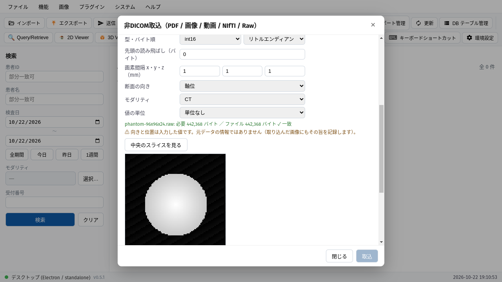
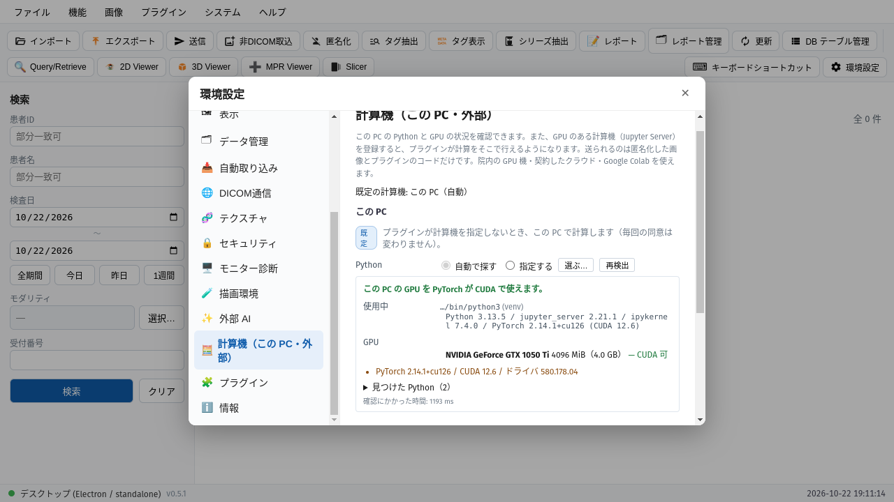
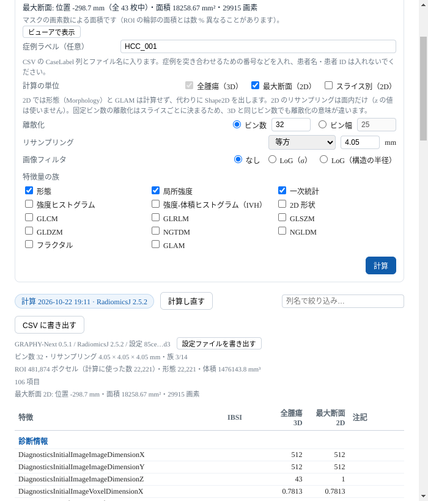
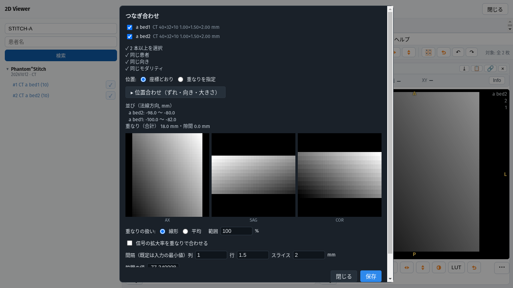
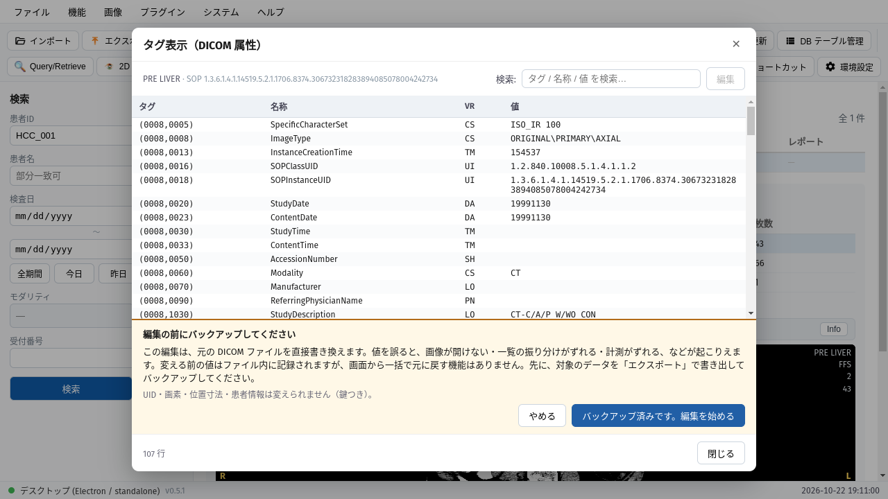
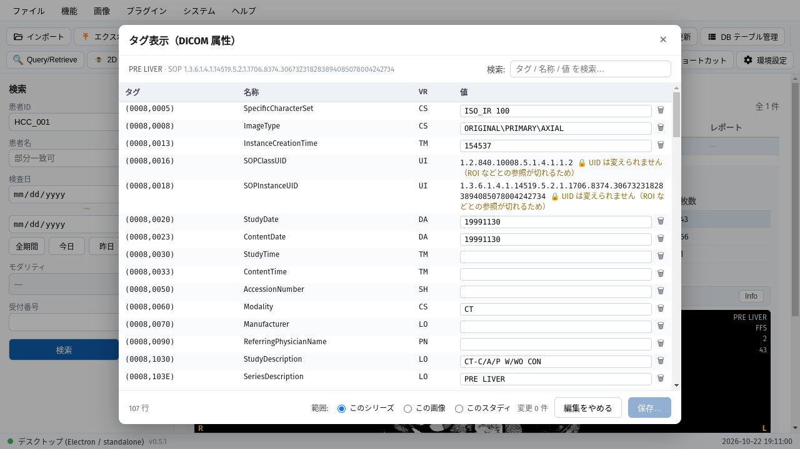

02 / 環境設定 ＞ プラグイン ＞ 見つける
公式の索引から、プラグインを「見つけて」導入する

- 1
「プラグインの導入を許可する」を入れると導入できます（既定は許可しません）
- 2
「見つける」に、公式の索引の一覧が出ます
- 3
名前・説明・リポジトリで絞り込みます
- 4
必要な本体の版と「導入」。導入のたびに、署名と中身を確かめます
例は、胸部X線から所見の下書きを作る公式プラグインです（本体 0.5.1 以上）。
⚠ 一覧に載っていても、安全の保証ではありません。
GRAPHY-NEXT v0.5.1 / 操作ガイド
取り込み・この PC の計算機・ROI 特徴量・つなぎ合わせ・タグの編集を、画面つきで紹介します。小さな変更は最後のページに一覧しました。
取り込みヘッダの無い画素配列（Raw）を DICOM に
計算機とプラグインこの PC の Python・GPU を見分ける／プラグインを見つけて導入
ROI 特徴量全腫瘍（3D）と最大断面（2D）を表に並べて CSV へ
つなぎ合わせ部分のシリーズを 1 本の派生シリーズに
タグの編集バックアップを促してから書き換え
そのほかの変更
01 / ファイル ＞ 非DICOM取込

型・バイト順・大きさ・読み飛ばしを入れると、申告した大きさとファイルの大きさが一致するかをその場で確かめます
「中央のスライスを見る」で、読み方が合っているかを取り込む前に確かめます
確認できたら「取込」。DICOM に変換して一覧に入ります
.raw・.img・.bin・拡張子の無いファイルを選べます。
⚠ 向きと位置は入力した値です（元データの情報ではありません）。取り込んだ画像にも、その旨を記録します。
02 / 環境設定 ＞ プラグイン ＞ 見つける
「プラグインの導入を許可する」を入れると導入できます（既定は許可しません）
「見つける」に、公式の索引の一覧が出ます
名前・説明・リポジトリで絞り込みます
必要な本体の版と「導入」。導入のたびに、署名と中身を確かめます
例は、胸部X線から所見の下書きを作る公式プラグインです（本体 0.5.1 以上）。
⚠ 一覧に載っていても、安全の保証ではありません。
02 / 環境設定 ＞ 計算機

この PC の GPU を、PyTorch が CUDA で使えるかを表示します
GPU の名前とメモリ。足りないものがあれば名前で案内します（GRAPHY はパッケージを入れません）
環境を変えたら「再検出」
CUDA の使える GPU があれば、この PC が既定の計算機になります。
単純X線（CR/DX）は、焼き込みの文字を塗らずにこの PC の計算機にだけ渡せます（外部の計算機へは送れません）。
03 / 2D Viewer ＞ 解析 ＞ Radiomics 特徴量（ROI）

計算の単位。全腫瘍（3D）は常に計算し、最大断面（2D）・スライス別（2D）を足せます
「計算」。結果は記録され、同じ条件で計算し直すとすぐに出ます
結果の表。単位ごとの列を並べて比較できます（IBSI の識別子つき）
「CSV に書き出す」。版・設定・ROI の大きさの記録もつきます
ROI マスクには、SEG などのマスクのシリーズを選びます（塗りの ROI は、ROI マネージャで DICOM SEG にして保存してから）。
画像フィルタ（LoG：σ または構造の半径）や、離散化・リサンプリングも選べます。この図は、4 mm の等方リサンプリングと、形態・局所強度・一次統計に絞った設定です。数値の定義は RadiomicsJ のものです。
04 / 2D Viewer ＞ 画像 ＞ つなぎ合わせ

つなぐシリーズを選びます（2 本以上）
つなげる条件（同じ患者・同じ向き・同じモダリティ）を確かめます
「保存」で、1 本の派生シリーズとして保管庫に入ります
重なりと隙間は座標から測って表示し、3 方向のプレビューで確かめられます。ずれ・向き・大きさの位置合わせもできます。
この図の画像は、この資料のために作った合成データです（2 本が 18 mm 重なっています）。
05 / タグ表示（メイン画面）

「編集」を押すと、バックアップを促す確認が出ます。元の画像を書き換えるためです

表の値の欄を、そのまま書き換えます
UID など変えられないタグには鍵の印が付きます（ROI などの参照が切れるため）
範囲（シリーズ／画像／スタディ）を選び「保存…」で最終確認
06 / そのほかの変更
この一覧は、更新の内容から拾った主なものです。すべての変更は、リリースノートを参照してください。